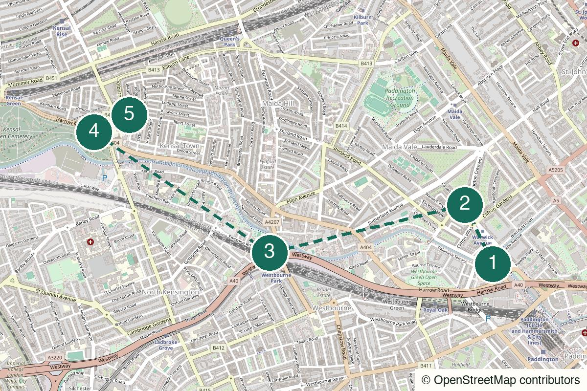

London Not yet field-walked
Rotherhithe
Warehouses, water and an old-room finish for a quieter stretch of the Thames.
Start Canada Water
Not yet field-walked · verify live details
Painted boats, a quieter canal towpath and a cemetery finish that is deliberately more local than central.
No field notes from readers yet — share one if you walk it.
Warwick Avenue Underground – Walk two minutes to the canal basin and choose the first stop by mood before taking the towpath.
Little Venice
Open the whole walk (opens in a new tab)
Confirm towpath conditions, cemetery closing time and the current status of all local finish options.
We never ask for your location.
Start with a chosen mood, let the canal do the long middle, then use the cemetery and an unflashy local finish to make the route feel like it was always going somewhere.
Not transit-free convenience for everyone, and not a canal stretch to romanticise after dark.
Good for a second date if both people like a sustained walk and a route that gets quieter rather than busier.
Best for a small group that will not resent the canal pace or a cemetery stop.
One of the strongest new solo prototypes in dry daylight.

Warwick Avenue station and Little Venice basin, London W2
From the start From Warwick Avenue, walk two minutes to the painted boats at the basin.
An immediate canal opening that tells you whether the day needs a bakery-café or a first pint.
Walk here from the station to Warwick Avenue → Little Venice (opens in a new tab)
5a Formosa Street, London W9 1EE
From the previous stop Use the pub branch for the Victorian snob screens; for a daytime bakery-café opening, use Paulette instead and join the towpath afterwards.
Intact Victorian snob screens divide the bar into small compartments. Confirm current hours before making it the start; Paulette is the daytime alternative.
Walk from the previous stop to The Prince Alfred – pub branch (opens in a new tab)
Regent’s Canal towpath, Little Venice to Kensal
From the previous stop Follow the towpath west in daylight, keeping the canal as the main line and using the live map at each bridge or access change.
Boats, herons and the backs of things. The city grows quieter and scruffier in the right way; do not use the railway-land section as an after-dark romance.
Walk from the previous stop to Regent’s Canal towpath (opens in a new tab)
Kensal Green Cemetery, Harrow Road, London NW10
From the previous stop Leave the canal for the cemetery entrance and check the gate time before committing to the interior.
The oldest of the Magnificent Seven: Brunel, Trollope, Wilkie Collins and acres of leaning angels. Treat it as the anchor, not a checklist. The other end of this man's story is a tunnel shaft in Rotherhithe.
Walk from the previous stop to Kensal Green Cemetery (opens in a new tab)
5 Regent Street, London NW10 5LG
From the previous stop Walk from the cemetery to Regent Street. Paradise on Kilburn Lane is only a fallback if its current status and format are verified.
The neighbourhood dining-room option. Confirm hours before relying on it; if the finish feels uncertain, leave from Kensal Green or Kensal Rise instead.
Walk from the previous stop to Parlour – local finish (opens in a new tab)
Nearest practical station: Kensal Green or Kensal Rise
Kensal Green is the mid-route Bakerloo/Overground exit; Kensal Rise is the practical end-of-route exit.
Open Kensal Green (opens in a new tab)Open Kensal Rise (opens in a new tab)
Dry daytime
Choose the first stop by mood, then treat Parlour as an optional finish until current hours are confirmed.
The daylight walking version with a clean station exit.
The full locals’ route once the finish is confirmed open.
Do not force the canal in heavy rain; use the first pub or café and choose another indoor route instead.
Keep the local dinner or return via Kensal Rise rather than crossing the city for a louder final act.
Use Kensal Green at the canal stage, or leave after the cemetery before dinner.
A route that admits it is allowed to end near home.
Help keep it useful
Closed gates, changed hours and the point where you bailed are more useful than polite applause.